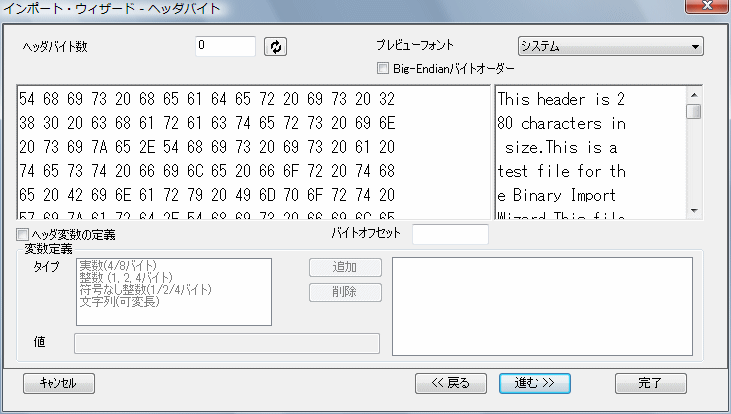

インポートウィザード、ヘッダーバイトページ(バイナリ)
ImpWiz-Bin-HeadBytesPage
このページを使って、バイナリヘッダのファイルを定義し、後で利用するためにヘッダから変数を抽出します。

ヘッダバイトのオプション
| ヘッダバイト数
|
数値を入力するか、ヘッダ部分をグラフィカルに選択して、バイナリファイルのヘッダ部分のバイト数を指定します。 グラフィカルに選択するには、プレビューパネル (Hex または ASCII) の目的の場所にカーソルを配置し、ヘッダバイト数テキストボックスの右にある「リフレッシュ」ボタンをクリックします。
|
| プレビューフォント
|
プレビューウィンドウのフォントを選択します。
|
| Big-Endianバイトオーダー
|
このチェックボックスを使用して、インポートデータのバイト順を指定します。
|
プレビューウィンドウ
左のパネルはバイト形式でデータを表示し、右側のパネルはASCIIテキストでデータを表示します。 どちらかのパネルにカーソルを配置して、ヘッダバイト数またはバイトオフセットをグラフィカルに選択できます。
変数
| ヘッダ変数の定義
|
このボックスを選択して、ファイルのヘッダ部分から変数を定義して抽出します。 このボックスを選択すると、変数の定義で使われる他のオプションが有効になります。
|
| バイトオフセット
|
このテキストボックスに(ヘッダ部分の)変数のバイトオフセット値を入力します。 hexおよびASCIIデータファイルの表示は、オフセットを反映して更新されます。
hex または ASCIIデータファイルの表示をクリックして、グラフィカルにバイトオフセットを指定できます。 テキストボックスは、バイトオフセット値で更新されます。
|
| 変数定義グループ
|
バイトオフセットを指定すると、
- 表示領域で、変数に対応するバイトをハイライトします。
- タイプリストから変数タイプを選択します。 変数の値が、編集不可の値ビューボックスに表示されます。
- 変数のデフォルト名はPnです。名前編集ボックスで名前を変更できます。
- 追加をクリックして、ターゲットページに保存する変数のリスト（右下のリストボックス）に変数を追加します。
- 変数を削除するには、右側のボックスで変数を選択し、削除をクリックします。
|